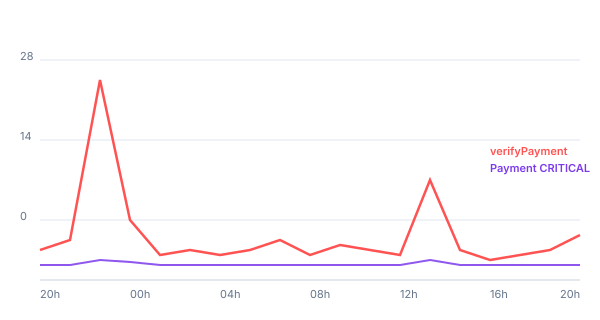

Kontik|Zupper — Incidente 24h
A virada das 14h aponta para o fluxo de pedido e pagamento.
Análise executiva de logs e métricas entre 07/05 20:00 e 08/05 20:00 BRT.
13:47
Último erro fatal
10:00
Início da escalada
~90%
Disco MySQL ocupado
+92%
Throughput pós-14h
A melhora das vendas combina mais com desbloqueio de pedido/pagamento do que com normalização de infraestrutura.
1. Infra pressionada
Disco MySQL ~90% e pico de conexões às 01:00 BRT.
2. Negócio retoma antes
Pós-14h, vendas sobem, banco continua alto.
3. Ponto de virada
Erro fatal em payment_form_id some na janela 14h-18h.
Os erros fatais caem na janela em que indicadores de negócio voltam a subir.
payment_form_id
Código espera string; chegava nulo.
13:50
Último Payment CRITICAL relevante.
+31%
Payment channel cresce 205→248/h.
Erros críticos
verifyPayment e Payment CRITICAL caem após 14h.
Erros críticos por hora

verifyPaymentFormByOrderId desaparece pós-14h; recorrência menor depois.
payment_form_id
Espera string; chegava nulo em reservas aéreas.
13:50
Último CRITICAL relevante.
+31%
Payment channel cresce.
Inspeção read-only
O wrapper de retry decide com base em deadline e Redis.
shouldAllowAnotherRequeue(orderId) se deadline ausente -> cria janela se race/Redis nao confirma -> loga warning retorno: true
A virada das 14h é mais sobre desbloqueio do que sobre infra zerar.
Pressão real de banco/disco entre 22h-08h.
Retry storm sustentado, não é a causa única.
Erro fatal em payment_form_id some na virada.
+31% Payment channel após 14h confirma o ponto.
Próximo: patch em payment_form_id + investigar pressão de disco MySQL.